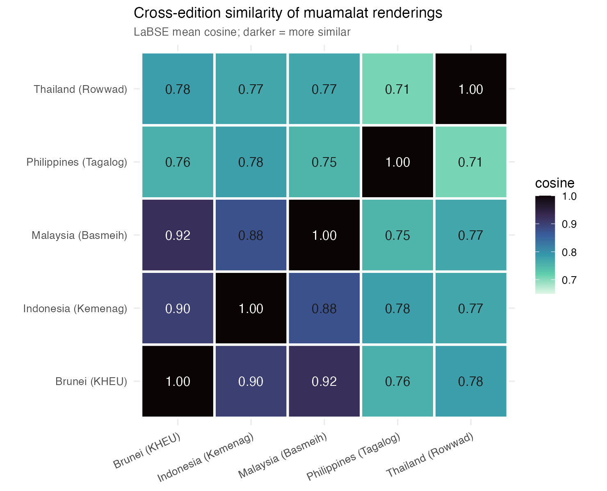
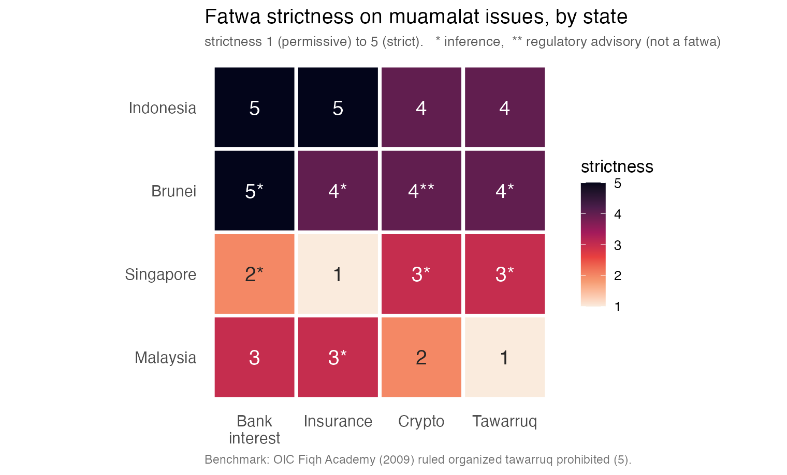
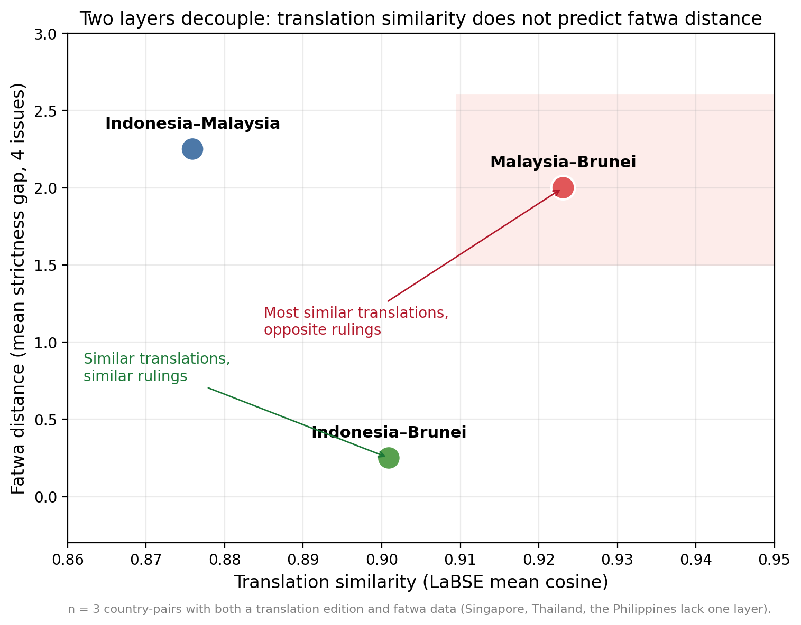
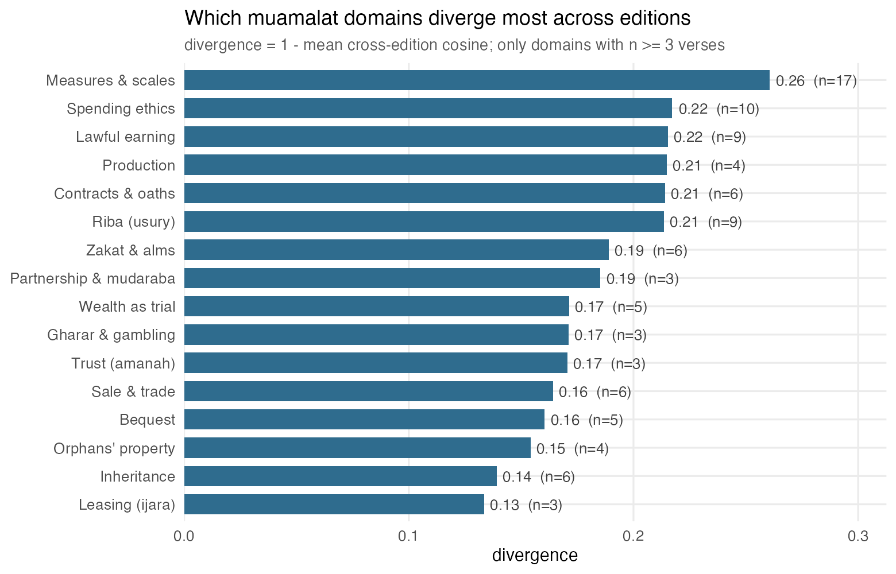

How five Southeast Asian states translate the economic Qur'an the same way — yet rule on it differently.
Working paper · under review at Studia IslamikaAcross Southeast Asia, rendering the Qur'an into a national language is the work of the state. This study takes the muʿāmalāt (commercial-ethics) verses and asks two things of five official editions: do their translations agree, and do the states' fatwas on the economy agree? Transposing the text-mining method of Lange et al. (2021) from classical Arabic to a multilingual corpus, it finds that the two layers come apart.
Cross-edition similarity is governed by language family. The Malay editions of Malaysia and Brunei are the most similar pair of all.
On bank interest, insurance, crypto, and tawarruq the same states run from most to least permissive: Malaysia, Singapore, Brunei, Indonesia.
The most textually similar pair, Malaysia–Brunei, anchors opposite ends of the ruling spectrum. The translation does not predict the fatwa.
Every rendering is embedded with LaBSE, a model that places sentences from different languages in one comparable space; similarity is the cosine between editions, averaged over verses.




Everything behind the paper — corpus, code, cached embeddings — is open. A single notebook recomputes the similarity matrix, re-runs the statistical tests, and plots the decoupling, from committed data with no model download.
git clone https://github.com/DzakiDU/convergent-scripture cd convergent-scripture pip install -r requirements.txt jupyter notebook notebooks/reproduce_analysis.ipynb